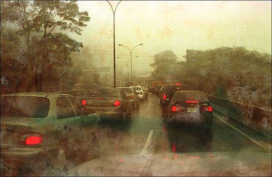

Ricardo Báez Duarte
memories and solitude
Ricardo Báez Duarte
memories and solitude
This is Ricardo Báez Duarte's second MOCA exhibit. He lives in Caracas, Venezuela. He is a mathematician and graphics software designer, and formerly an academic administrator. His prints have appeared in numerous one-man and group shows in Caracas for years. He works from his own photographs. His subjects are commonplace: museum galleries he has visited, store fronts, street scenes. His images are understated, his coloring muted and careful, his subjects sometimes cautiously blurred or obscured. He forces nothing. He works to the establishment of mood. This exhibit of 13 images is derived from his series called Memories and Solitude.
